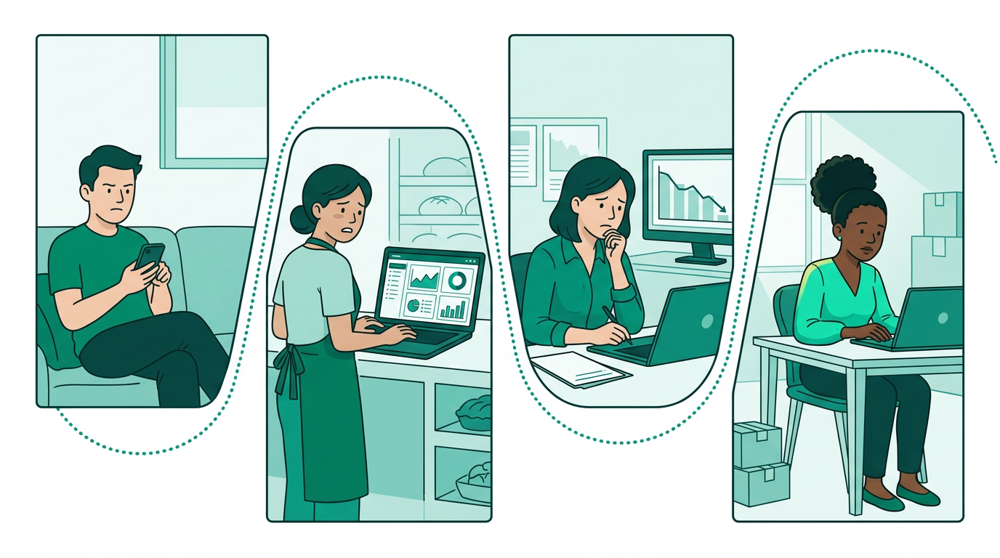
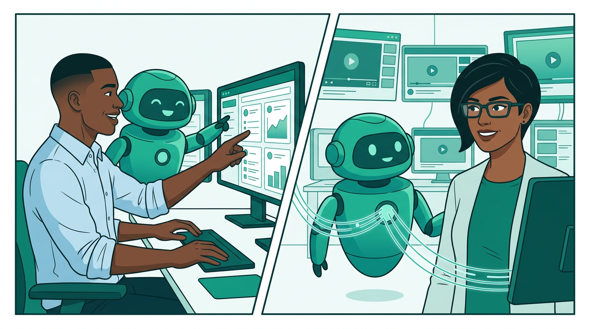
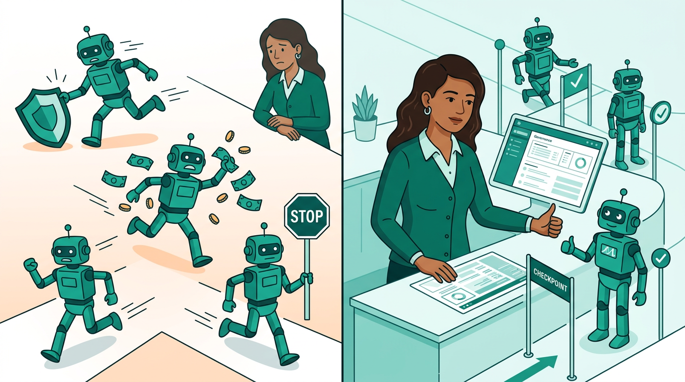
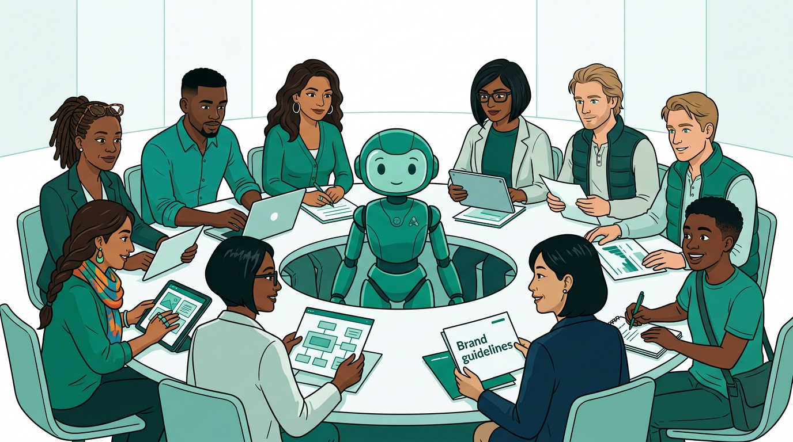
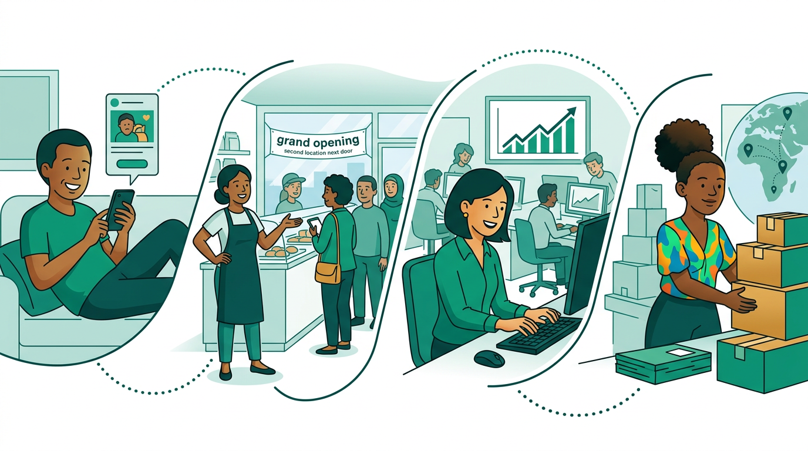
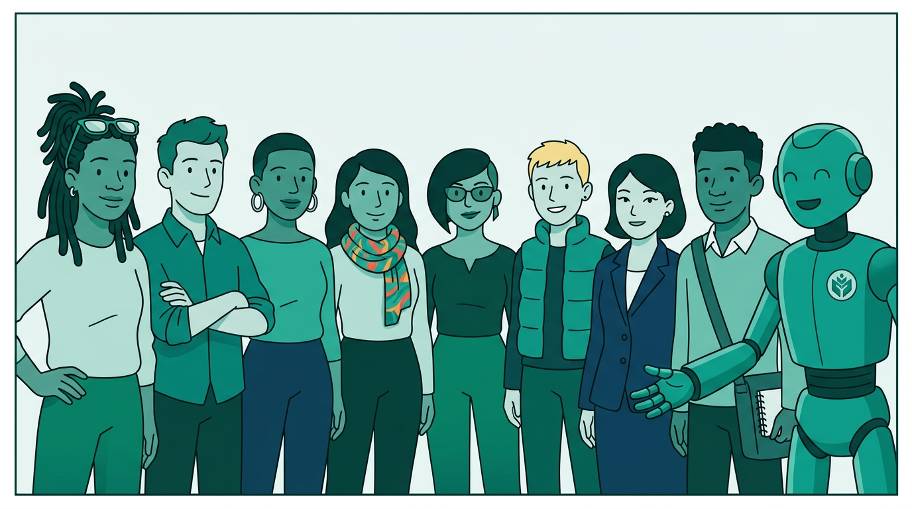

AgenticAdvertising.org is the member organization shaping how AI and advertising work together — for consumers, for businesses, and for the people who create the content we all depend on.

Advertising connects businesses with the people they serve. It funds the journalism you read, the shows you watch, the apps you use for free.
When it works, it's a quiet engine of growth — for a bakery opening its second location, for a publisher investing in their newsroom, for an entrepreneur in Nairobi reaching her first thousand customers.
It doesn't always work.
What's changing

AI agents are learning to do the operational work of advertising — finding audiences, matching budgets to outcomes, generating creative, executing across dozens of systems at once.
This changes the economics of advertising in ways that matter. A local business gets the same media buying intelligence that used to require a six-figure agency retainer. A mid-size publisher competes for premium campaigns without a twenty-person sales team. A brand launches in a new market in days, not months.
Agents help people work better together. They help businesses grow. They help fund the content people depend on. They can help grow the global economy responsibly.
The stakes

But speed without judgment is just fast mistakes.
Without governance, agents optimize for whatever metric they're pointed at — even when that doesn't align with what a brand intended, what a publisher deserves, or what a consumer should experience. Without standards, every platform becomes a silo, and the promise of efficiency collapses into a different kind of fragmentation.
The question isn't whether AI transforms advertising. It's whether humans stay involved in the decisions that matter.
Who's building it

That's what we're building.
AgenticAdvertising.org brings together the people and companies shaping how AI and advertising work together. Publishers who want fair value for their content. Brands who want their identity respected at machine speed. Agencies finding better outcomes for their clients. Data providers who believe transparency makes markets work. Builders creating the tools. And the people just entering the field — learning the language of a profession being reinvented underneath them.
We publish AdCP, the open protocol that gives agents a shared language across every advertising platform. We govern through Embedded Human Judgment — the principle that humans stay in the loop on decisions with real consequences. We educate through a certification program taught by Addie, our AI, because the best way to build trust in agentic systems is to make sure people understand them deeply.
What better looks like


This is early. The standards are being written. The governance frameworks are being tested. The first generation of agentic advertising professionals is being certified right now. That means you can shape it.
Join the member organization. Find partners. Shape the standards.
Become a member →